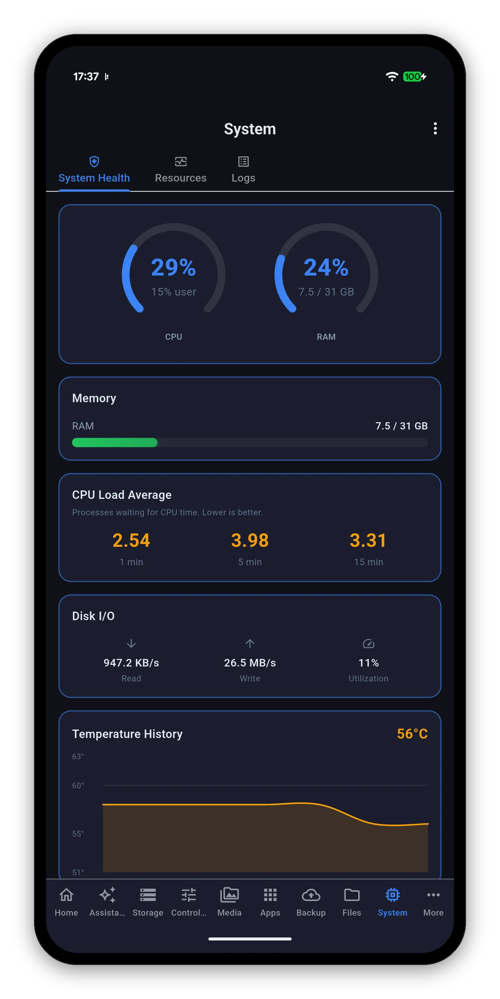

Syno Manager is an independent, native app for your Synology NAS on macOS and Windows. The same app as on the phone, laid out for a bigger window: live readings, Docker, backups, files and Wake-on-LAN, without opening DSM in a browser tab.

Open a section, Restart NAS and Shut down NAS are real Shortcuts actions through App Intents. Schedule them or chain them into your own shortcuts.
Where Apple Intelligence is supported and enabled, ask about your NAS in plain words. The model runs on the Mac.
DSM passwords and device tokens are held in the macOS Keychain, never in plain text.
Apple is one universal purchase: buy Syno Manager once and it is on your Mac, iPhone and iPad.
Download any file from File Station straight to a folder on your PC through the standard Windows dialog, at home or over QuickConnect.
The always-on NAS sends the magic packet from inside your network. The guide covers the Windows side, including turning Fast Startup off.
Hyper Backup tasks with the space they take, and Active Backup for Business devices with a deduplicated total.
The Microsoft Store version is a separate $6.99 purchase.
$6.99 once per platform. No ads, no subscriptions, no in-app purchases. Needs a Synology NAS on DSM 7.0 or later.